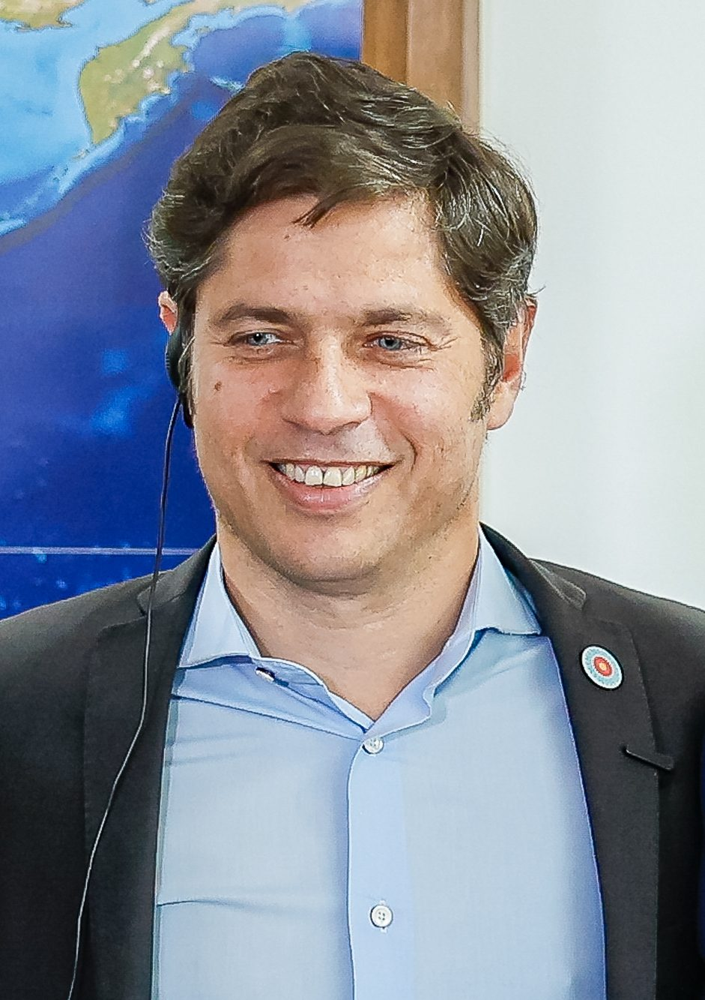
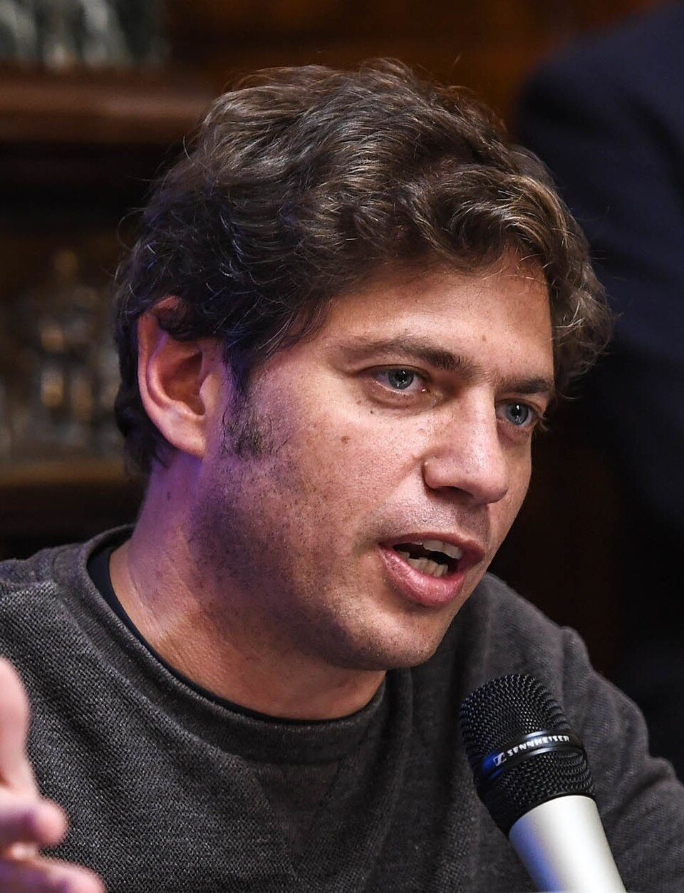
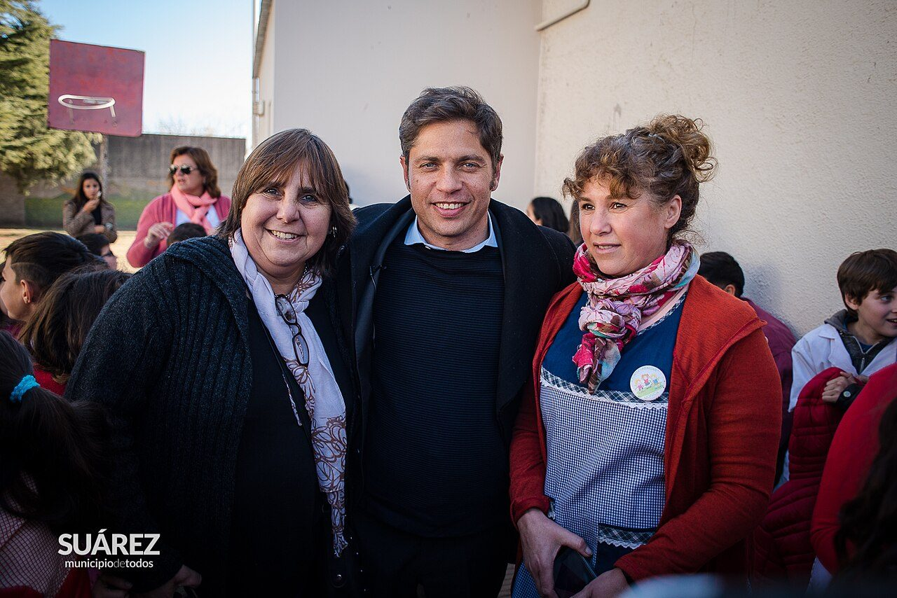
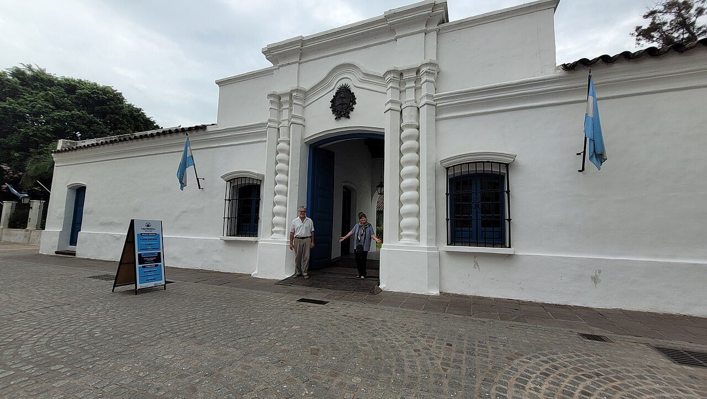

Seminario: Consultoría y Comunicación Política Aplicada · UBA · Grupo 2
en nuestra mesa siempre hay silla para uno más
Plan integral de comunicación de campaña · Axel Kicillof Presidente 2027
Matías Balmaceda · Maia Fleischman · Sofía García · Pilar Peón · Blas Leandro Sires

axel2027
Diagnóstico
un gobierno desgastado y un laburo que no alcanza
desaprueba la gestión de Milei (31,4 % la aprueba).
Zentrix · ago 2026
pide un cambio importante de rumbo.
Brief de la cátedra
empleos formales perdidos y 32.290 empresas cerradas desde diciembre de 2023.
CEPA · 2026
de inflación interanual en septiembre (1,9 % mensual).
INDEC · 2026
Lo que más preocupa
Brief de la cátedra. La inseguridad crece entre mayores de 50.
Un electorado volátil
Crece el "ningunismo". Predomina una mirada privatista (54 % contra 40 % estatista), pero 3 de cada 4 rechazan recortar educación, salud y cultura.
Pulsar UBA · 2025
El debate sobre el tamaño del Estado favorece a Milei. El debate sobre los ingresos de la gente favorece a Kicillof.
Supuesto de trabajo: elección presidencial el domingo 24 de octubre de 2027.
Imagen
no hay que instalarlo: hay que cambiar cómo se lo mira
lo conoce.
40 % positiva · 39 % negativa.
Con qué lo asocian
Imagen positiva por segmento: PBA 51 % · NSE bajo 47 % · menores de 30 45 % · total país 40 % · NSE alto 29 % · CABA 27 %. Brief de la cátedra (2026).
Mapa de actores · tocá cada tarjeta
FODA · tocá cada letra
dónde estamos parados
Estrategia
no hay que instalarlo: hay que cambiar el marco
De "más Estado o menos Estado" a un Estado que funciona: eficaz, moderno y medible.
Núcleo
PBA (51 %), NSE bajo (47 %), menores de 30 (45 %). Convertir el apoyo en voto.
Territorio · TV y radios del conurbano · WhatsApp de voluntarios · TikTok, Reels y streaming
Sectores medios y 7 provincias
Imagen regular (14 %), sin opinión (7 %). Chubut, La Pampa, Jujuy, Neuquén, Corrientes, Entre Ríos y Misiones. Ganar el voto con datos de gestión.
TV abierta y cable · radios y TV provinciales · pauta geolocalizada · timbreo
Rechazo alto
CABA, Córdoba, Mendoza, Santa Fe y NSE alto. Que discutan dentro de nuestro marco, sin buscar el voto.
Entrevistas técnicas en medios de referencia · hilos con datos en X · clases en YouTube
Transversal: el laburo en todas sus formas: asalariados, informales, cuentapropistas, monotributistas, trabajadores de plataformas y changarines. Que alcance, que sea estable y que tenga derechos.

Voz propia · ni K ni anti-K
la diferencia no se declara, se demuestra
Kicillof no habla de CFK por iniciativa propia, ni para criticarla ni para reivindicarla. Es un silencio estratégico.
¿Por qué no romper?
El núcleo K sostiene el piso (51 % en PBA, 47 % en NSE bajo). Romper desmoviliza, abre una interna y fragmenta el voto opositor.
¿Por qué no reivindicar?
Refuerza el rechazo en persuasión y comprensión, y alimenta el ataque más previsible: "sos Cristina".
¿Por qué el silencio?
Cada minuto hablando de CFK es un minuto menos de economía y gestión. Hablar del tema, aunque sea para despegarse, lo instala.
La respuesta única
"Tengo respeto por su historia y por los millones que la votaron, pero esta elección es sobre cómo salimos de este presente."Y se pivotea a un dato económico o de gestión. No se agrega nada más, aunque se repregunte.
Slogan
en nuestra mesa siempre hay silla para uno más.
Un Estado que funciona: ordenar la economía sin dejar a nadie tirado.
La metáfora. "Nuestra mesa" es un país federal donde se dialoga con las provincias. Es amplia, pero no neutral: convoca a quienes sienten que este rumbo no les cierra. Frente a los gritos y el ajuste, una mesa donde se escucha y se resuelve.
Que el laburo alcance. Un Estado que funcione, sin dejar a nadie tirado.

Plan de redes
cada red, una tarea
Las redes llevan el eje de "Estado sí / Estado no" a eficacia y resultados. Temas: 1) laburo e ingresos · 2) educación y salud pública · 3) lo federal. La seguridad no se evita: se trata con gestión concreta.
| Público | Red | Formato | Tono |
|---|---|---|---|
| Núcleo y jóvenes | TikTok y Reels | Breve, frecuente, detrás de escena | Cercano, con humor |
| Persuasión | Carruseles de IG y Facebook con pauta geolocalizada | Datos simples, testimonios | Sereno y propositivo |
| Comprensión | X y YouTube | Hilos con datos, clases, entrevistas largas | Técnico y respetuoso |
Reglas de la cuenta oficial
Siempre positiva y propositiva · cada pieza con un dato verificable y su fuente, enlazado al tablero abierto de gestión · simbología partidaria mínima · trabajadores formales e informales en todas las piezas.Plataforma con QR en timbreos, mesitas y redes. Junta demandas georreferenciadas y alimenta contenidos ("esto nos dijeron en Corrientes") y el Acta de la Mesa Federal.
"Nuestra mesa" en Oberá
Misiones es provincia de persuasión: la crisis yerbatera permite hablar de laburo, ingresos y federalismo a la vez. Tres paradas: secadero cooperativo, escuela agrotécnica y mesa larga al aire libre.
Mostramos
Al candidato escuchando · tierra colorada · manos cosechando · el mate que le pasan · la mesa que se alarga.Evitamos
Atril · escenario · banderas · pecheras · planos de acto.También: reel de 45–60 s, historias, foto + hilo en X y corte de 15 s para pauta en el NEA. Referencia: Zohran Mamdani (Nueva York, 2025).
axelkicillof En Oberá, la yerba no se mide en kilos, se mide en trabajo. Familias que cosechan hace tres generaciones y hoy no cubren los costos. Vinimos a escuchar. 🧉
Convocatoria: la Mesa Larga de las 24 provincias
- "Este sábado, el país se sienta a la mesa."
- Casa Histórica: "Acá se sentaron a pensar un país."
- "211 años después, volvemos. Con los que laburan."
- 150 m · 24 tramos: uno por provincia y uno por la Ciudad.
- "En cada tramo, alguien que labura."
- "Vengo a escuchar a las 24 provincias."
- "Y a comprometerme con lo que me digan."
- Sábado 4/9 · 18 h · Casa Histórica, Tucumán.
- Placa: "En nuestra mesa siempre hay silla para uno más."
Tocá 🔇 para escucharlo con sonido. Maqueta con fotos de archivo: las frases son la propuesta del grupo, no declaraciones reales. Bajar el reel
@unasillamas
Cuenta complementaria con estética de meme, para jóvenes y ningunistas. Nunca anuncia propuestas: eso queda en la oficial. Mito vs. realidad · salimos a preguntar · costado humano · respuesta rápida.
Mito vs. realidad · tocá la tarjeta
Salimos a preguntar · probalo vos
Plan de acciones
la mesa larga de las 24 provincias
Pasá por cada tramo. Kicillof está en el medio, no en la cabecera: primero escucha la ronda de los 24.

Imagen: plano de dron con la Casa Histórica de fondo. Prensa: convocatoria 72 h antes, medios de las 24 jurisdicciones, streaming y punto de prensa sin atril. Riesgos: escrache (seguridad discreta), lluvia (carpa), "puesta en escena" (participantes reales y verificables).
spot "la mesa larga" · 60 s
Presentarlo como alternativa capaz de ordenar la economía, recuperar ingresos y garantizar un Estado que funcione. Registro documental, personas reales, luz natural, música instrumental suave.
Estreno el 19 de septiembre. Versiones de 60, 30 y 15 segundos (una por protagonista, con pauta en su provincia). El animatic usa fotos de los lugares; en el rodaje se filma a las personas reales.
Calendario
de acá al 24 de octubre
Zoom a la campaña: septiembre y octubre de 2027. El timbreo "Una silla más" se repite todos los fines de semana.
en nuestra mesa siempre hay silla para uno más.
Seminario: Consultoría y Comunicación Política Aplicada · UBA · Grupo 2 · Matías Balmaceda · Maia Fleischman · Sofía García · Pilar Peón · Blas Leandro Sires